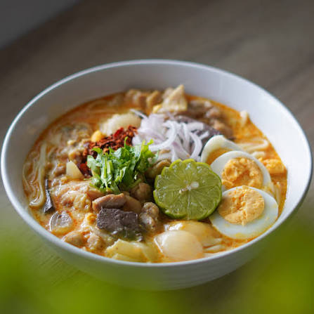
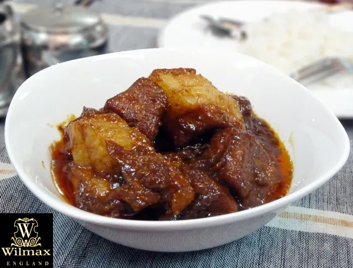
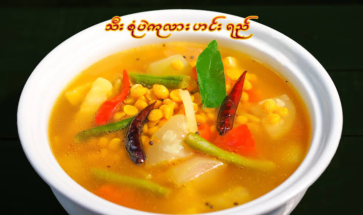

Our Menu
Noodle & Soup Favorites
Our most famous, heart-warming dishes. Authentic Myanmar comfort food.
-

Mohinga
Fish Noodle Soup - The national dish of Myanmar. Rice noodles in a rich, flavorful fish broth with crispy fritters.
-

Shan Noodles
Available dry or in soup. Rice noodles with marinated chicken or pork, topped with roasted peanuts and fresh herbs.
-

Ohno Khao Swe
Coconut Chicken Noodles - Creamy coconut curry noodle soup with tender chicken and crispy noodles on top.
Myanmar A Thoke (Salads)
Vibrant, flavorful salads made with noodles, vegetables, or tea leaves.
-

Laphet Thoke
Tea Leaf Salad - Myanmar's most famous salad featuring fermented tea leaves, crunchy nuts, and savory seasonings.
-

Gyin Thoke
Ginger Salad - Fresh, zesty salad with pickled ginger, crispy beans, and sesame seeds.
-

Khauk Swe Thoke
Noodle Salad - Mixed noodles tossed with chicken, vegetables, and a tangy dressing.
Rice & Curries
Hearty main courses traditionally served with rice and side dishes.
-

Wethani Curry
Pork Curry - Slow-cooked pork in a rich, aromatic curry sauce with traditional spices.
-

Kyet Thani Curry
Chicken Curry - Tender chicken simmered in flavorful curry with tomatoes and onions.
-

Thee Sone Soup
Mixed Vegetable Soup - Seasonal vegetables cooked in a light, aromatic curry sauce. Perfect for vegetarians.
Ready to experience authentic Myanmar cuisine?
Visit us near Otsuka Station or contact us for reservations.
Visit Us